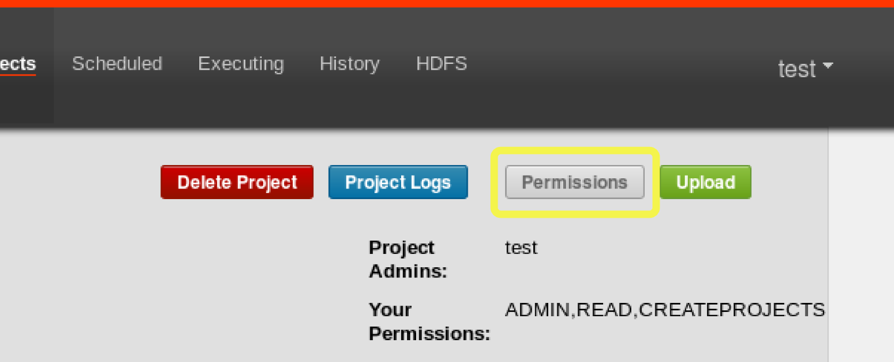

Project Permissions
When a project is created, the creator is automatically given an admin status on the project. This allows the creator to view, upload, change jobs, run flows, delete and add user permissions to the project. An admin can remove other admins, but cannot remove themselves. This prevents projects from being admin-less except when admins are deleted by a user with an admin role.
The permission page is accessible from the project page.

On the permissions page, admins can add other users, groups or proxy users to the project.

-
Adding user permissions gives those users those specified permissions on the project. Remove user permissions by unchecking all of the permissions.
-
Group permissions allow everyone in a particular group the specified permissions. Remove group permissions by unchecking all the group permissions.
-
If proxy users are turned on, proxy users allows the project workflows to run as those users. This is useful for locking down which headless accounts jobs can proxy to. They are removed by clicking on the ‘Remove’ button once added.
Every user is validated through the UserManager to prevent invalid users from being added. Groups and Proxy users are also check to make sure they are valid and to see if the admin is allowed to add them to the project.
The following permissions can be set for users and groups:
| Permission | Description |
|---|---|
| ADMIN | Allows the user to do anything with this project, as well as add permissions and delete the project |
| READ | The user can view the job, the flows, the execution logs. |
| WRITE | Project files can be uploaded, and the job files can be modified. |
| EXECUTE | The user is allowed to execute, pause, cancel jobs. |
| SCHEDULE | The user is allowed to add, modify and remove a flow from the schedule. |